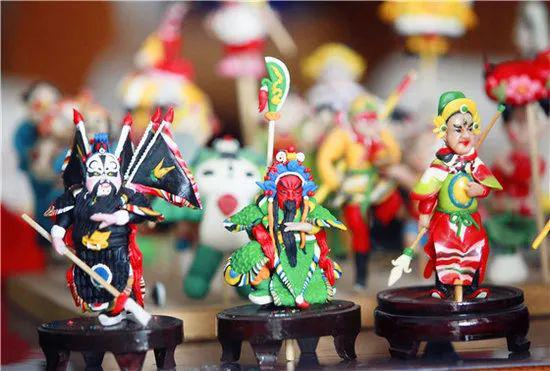
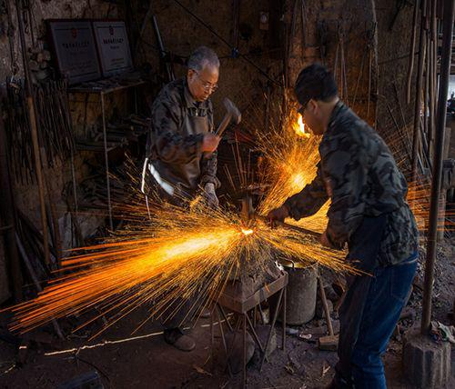

第五届中国非物质文化遗产博览会传统工艺比赛召开初赛评审会
2018-08-06 来源：第五届中国非物质文化遗产博览会
第五届中国非物质文化遗产博览会传统工艺比赛召开初赛评审会

由文化和旅游部、山东省人民政府联合主办的第五届中国非物质文化遗产博览会将于9月13日在济南开幕。
8月4日，由文化和旅游部、山东省人民政府主办，山东省文化厅、济南市人民政府承办的第五届中国非物质文化遗产博览会传统工艺比赛初赛评审会在济南召开。
围绕“活态传承、活力再现”的主题，第五届中国非物质文化遗产博览会分为多个版块，其中传统工艺比赛充分体现“传统工艺走进现代生活”的理念。比赛设置草柳藤编织、剪纸、泥面塑、陶瓷成型、金属锻制、刺绣六大传统工艺类项目，分为初赛与决赛两个部分。
此次比赛面向以上六类非遗项目的传承人（国家级代表性传承人除外）及广大传统工艺从业者，经各大新闻媒体广泛宣传发动，全国各地共有2180人报名。通过全国各地参赛选手报送的作品照片，反映出参赛选手的高超技艺水平。

初赛评审会邀请了30名来自全国各地的专家，成立了评审专家小组，对符合报名要求的作品进行评审打分；并邀请纪检人员对评审全过程进行监督。经过专家评委评审，共计233人进入决赛，其中草柳藤编织项目36人，泥面塑项目42人，剪纸项目34人，陶瓷成型项目39人，金属锻制项目40人，刺绣项目42人。
传统工艺比赛决赛将于9月13至17日在第五届中国非物质文化遗产博览会现场举办，届时各位选手将进行激烈的现场竞技，给到场观众奉献一场精彩的非遗制作技艺展示！